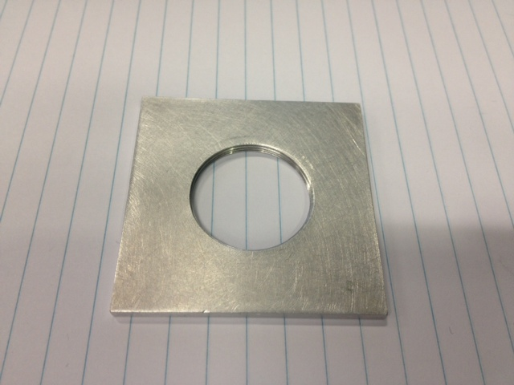
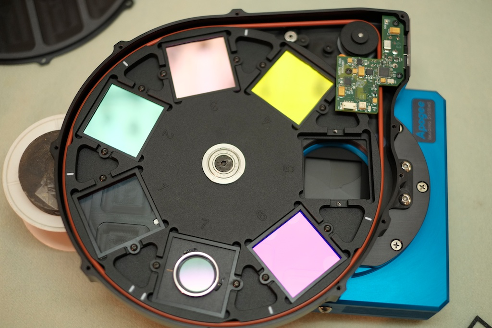
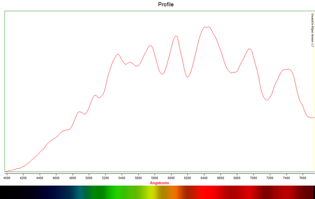

The StarAnalyser 100 transmission grating adapted to fit into an Apogee filter wheel. This required machining the SA100 fit within the confines of the CFW.
A 50mm square x 3mm thick aluminium holder, tapped to accept the filter size of the SA100:

Test images were undertaken to fine tune alignment of the grating to the CCD sensor. The rim of the filter is then held in position with a dab of removable glue.

Using an Apogee U16M (KAF-16803, 9um pixels) on an RC14C at F/7 yields a dispersion of approximately 20 Angstroms per pixel.
A resulting low resolution image of Antares showing some major features:
